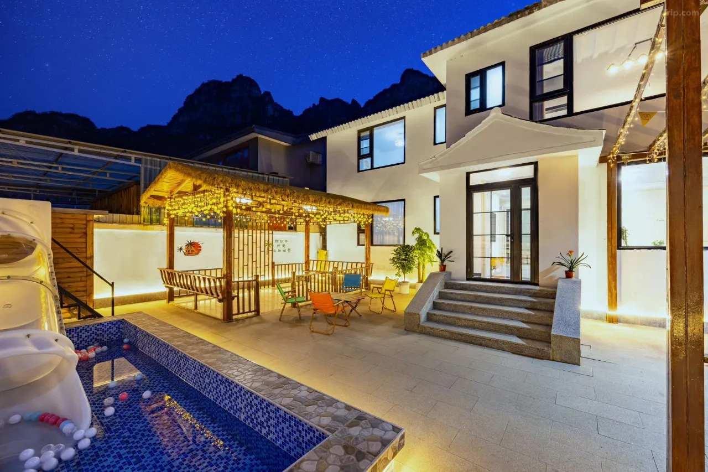
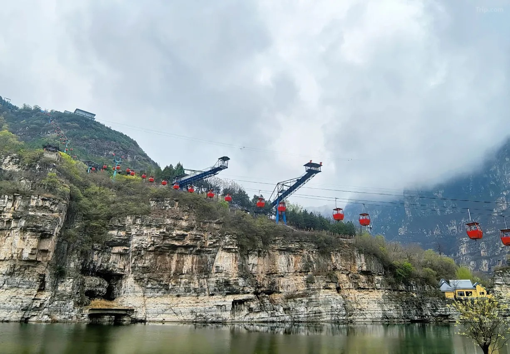
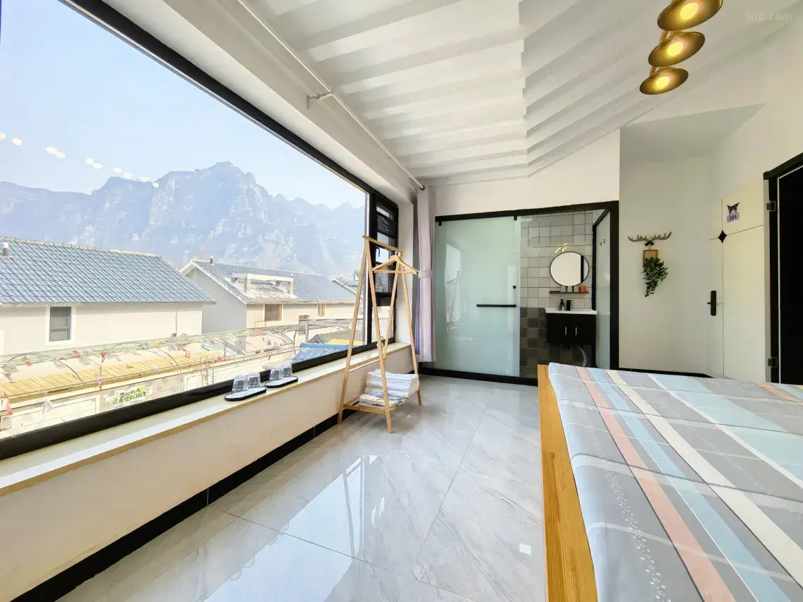
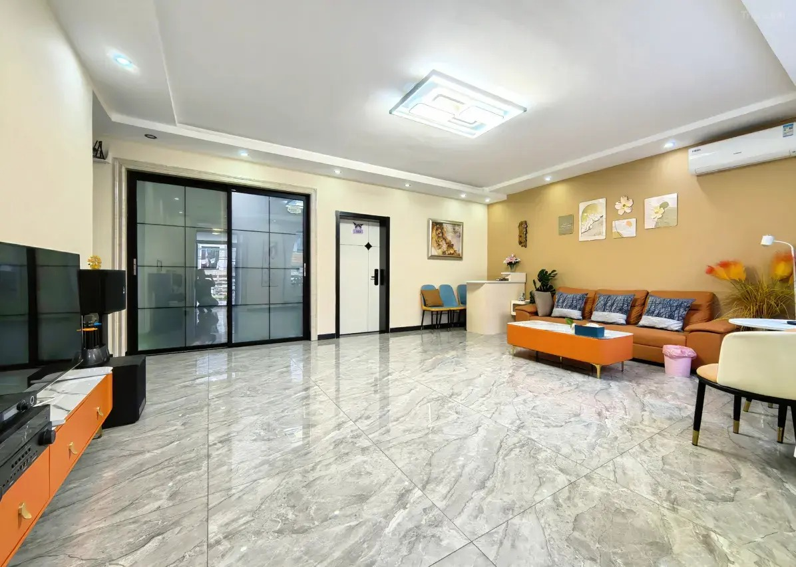
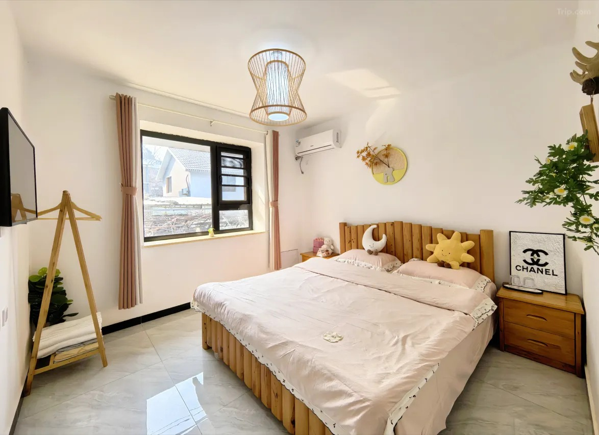
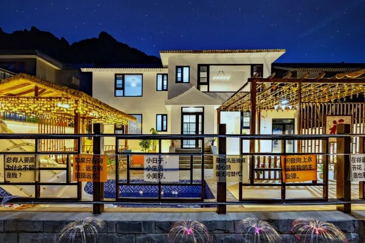

第一天
下午入住栖犀，去拒马河边散步或拍照。傍晚回小院烧烤，孩子可以在院子里玩水。
查看亲子两天一晚攻略
北京房山 · 十渡风景名胜区核心区域
一家靠近拒马河、缆车和蹦极的设计师小院。白天在十渡玩山水项目，晚上回院子烧烤、玩水、聊天。
位置与周边
栖犀小院位于北京房山区十渡镇九渡村别墅区3排2栋，属于十渡风景名胜区核心区域。拒马河基本步行十分钟左右可到，拒马乐园、聚龙湾、缆车、蹦极等项目也在附近。
周边商业配套成熟，吃饭、买东西、找咖啡店都方便。附近有饭店、商店，也有肯德基、必胜客等连锁餐饮。东湖港、孤山寨、乐谷银滩等景区也适合安排在两天一晚行程里。

院子与房间
栖犀不是常见农家院风格。小院为独门独院，共7间客房，均带独立卫浴，可住约17-20人。院子和房间偏现代简约，空间明亮，床品舒适，适合想找一点设计感的北京周边游客。




小院配置
院内支持自助烧烤、自助做饭，配有KTV、麻将机、棋牌、儿童戏水泳池、免费停车和充电车位。可预约烤全羊、农家菜、红鳟鱼等特色餐食。
十渡怎么玩
下午入住栖犀，去拒马河边散步或拍照。傍晚回小院烧烤，孩子可以在院子里玩水。
查看亲子两天一晚攻略上午安排缆车、蹦极或周边山水项目。中午在景区附近吃饭，下午返程，节奏轻松。
第一次来十渡住哪里亲子家庭、朋友聚会、情侣周末、想从北京短暂逃离城市的人。
栖犀和农家院的区别为什么选栖犀
预订与咨询
栖犀小院已上线携程等平台。价格会随工作日、周末和节假日变化，以平台实时信息为准。
多人包院、携带宠物、预约餐食或充电车位，建议预订前提前联系确认。包院享优惠，工作日优惠，节假日提前订享优惠。